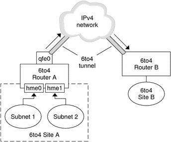
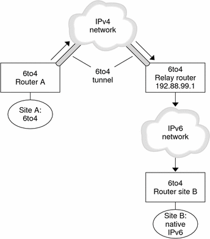
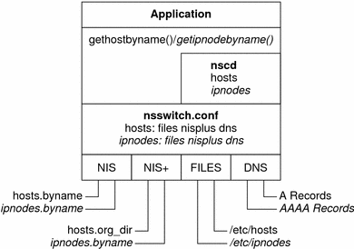

Previous
Previous
Topology of a 6to4 Tunnel
The following figure shows a 6to4 tunnel between two 6to4 sites.
Figure 11-6 Tunnel Between Two 6to4 Sites
The figure depicts two isolated 6to4 networks, Site A and Site B. Each site has configured a router with an external connection to an IPv4 network. A 6to4 tunnel across the IPv4 network connects the 6to4 sites.
Before an IPv6 site can become a 6to4 site, you must configure at least one router interface for 6to4 support. This interface must provide the external connection to the IPv4 network. The address that you configure on qfe0 must be globally unique. In this figure, boundary Router A's interface qfe0 connects Site A to the IPv4 network. Interface qfe0 must already be configured with an IPv4 address before you can configure qfe0 as a 6to4 pseudo-interface.
In the figure, 6to4 Site A is composed of two subnets, which are connected to interfaces hme0 and hme1 on Router A. All IPv6 hosts on either subnet of Site A automatically reconfigure with 6to4-derived addresses on receipt of the advertisement from Router A.
Site B is the opposite endpoint of the tunnel from Site A. To correctly receive traffic from Site A, a boundary router on Site B must be configured for 6to4 support. Otherwise, packets that the router receives from Site A are not recognized and dropped.
Packet Flow Through the 6to4 Tunnel
This section describes the path of packets from a host at one 6to4 site to a host in a remote 6to4 site. This scenario uses the topology that is shown in Figure 11-6. Moreover, the scenario assumes that the 6to4 routers and 6to4 hosts are already configured.
A host on Subnet 1 of 6to4 Site A sends a transmission, with a host at 6to4 Site B as the destination. Each packet header in the flow has a source 6to4-derived address and destination 6to4-derived address.
6to4 Router A receives the outgoing packets and creates a tunnel over an IPv4 network to 6to4 Site B.
Site A's router encapsulates each 6to4 packet into an IPv4 header. Then the router uses standard IPv4 routing procedures to forward the packet over the IPv4 network.
Any IPv4 routers that the packets encounter use the packets' destination IPv4 address for forwarding. This address is the globally unique IPv4 address of the interface on Router B, which also serves as the 6to4 pseudo-interface.
Packets from Site A arrive at Router B, which decapsulates the IPv6 packets from the IPv4 header.
Router B then uses the destination address in the IPv6 packet to forward the packets to the recipient host at Site B.
Considerations for Tunnels to a 6to4 Relay Router
6to4 relay routers function as endpoints for tunnels from 6to4 routers that need to communicate with native IPv6, non-6to4 networks. Relay routers are essentially bridges between the 6to4 site and native IPv6 sites. Because this solution is very insecure, by default, the Solaris OS does not enable 6to4 relay router support. However, if your site requires such a tunnel, you use the 6to4relay command to enable the following tunneling scenario.
Figure 11-7 Tunnel From a 6to4 Site to a 6to4 Relay Router
In Figure 11-7, 6to4 Site A needs to communicate with a node at the native IPv6 Site B. The figure shows the path of traffic from Site A onto a 6to4 tunnel over an IPv4 network. The tunnel has 6to4 Router A and a 6to4 relay router as its endpoints. Beyond the 6to4 relay router is the IPv6 network, to which IPv6 Site B is connected.
Packet Flow Between a 6to4 Site and Native IPv6 Site
This section describes the flow of packets from a 6to4 site to a native IPv6 site. The text uses the scenario that is shown in Figure 11-7 as an example.
A host on 6to4 Site A sends a transmission that specifies as the destination a host at native IPv6 Site B. Each packet header in the flow has a 6to4-derived address as its source address. The destination address is a standard IPv6 address.
6to4 Router A receives the outgoing packets and creates a tunnel over an IPv4 network to a 6to4 relay router.
6to4 relay routers that are part of the 6to4 relay router anycast group have the address 192.88.99.1. This anycast address is the default address for 6to4 relay routers. If you need to use a specific 6to4 relay router, you can override the default and specify that router's IPv4 address.
Site A's 6to4 router encapsulates each packet into a IPv4 header, which has the IPv4 address of the 6to4 relay router as its destination. The 6to4 router uses standard IPv4 routing procedures to forward the packet over the IPv4 network. Any IPv4 routers that the packets encounter forward the packets to the 6to4 relay router.
The physically closest anycast 6to4 relay router to Site A retrieves the packets that are destined for the 192.88.99.1 anycast group.
The relay router decapsulates the IPv4 header from the 6to4 packets, revealing the native IPv6 destination address.
The relay router then sends the now IPv6-only packets onto the IPv6 network, where the packets are ultimately retrieved by a router at Site B. The router then forwards the packets to the destination IPv6 node.
IPv6 Extensions to Solaris Name Services
This section describes naming changes that were introduced by the implementation of IPv6. You can store IPv6 addresses in any of the Solaris naming services, NIS, LDAP, DNS, and files. You can also use NIS over IPv6 RPC transports to retrieve any NIS data.
DNS Extensions for IPv6
An IPv6-specific resource record, the AAAA resource record, has been specified by in RFC 1886 DNS Extensions to Support IP Version 6. This AAAA record maps a host name into a 128 bit IPv6 address. The PTR record is still used with IPv6 to map IP addresses into host names. The 32 four bit nibbles of the 128 bit address are reversed for an IPv6 address. Each nibble is converted to its corresponding hexadecimal ASCII value. Then, ip6.int is appended.
Changes to the nsswitch.conf File
IPv6 support has been added to the NIS, LDAP, and DNS name services. Consequently, the nsswitch.conf file has been modified to support IPv6 lookups.
The following diagram shows the new relationship between the nsswitch.conf file and the new name services databases for applications that use the gethostbyname and getipnodebyname commands. Items in italics are new. The gethostbyname command checks only for IPv4 addresses that are stored in /etc/inet/hosts. If the lookup fails, then the command checks the database that is specified in the hosts entry in the nsswitch.conf file.
Figure 11-8 Relationship Between nsswitch.conf and Name Services
For more information on name services, see System Administration Guide: Naming and Directory Services (DNS, NIS, and LDAP).
Changes to Name Service Commands
To support IPv6, you can look up IPv6 addresses with the existing name service commands. For example, the ypmatch command works with the new NIS maps. The nslookup command can look up the new AAAA records in DNS.
NFS and RPC IPv6 Support
NFS software and Remote Procedure Call (RPC) software support IPv6 in a seamless manner. Existing commands that are related to NFS services have not changed. Most RPC applications also run on IPv6 without any change. Some advanced RPC applications with transport knowledge might require updates.
IPv6 Over ATM Support
The Solaris OS supports IPv6 over ATM, permanent virtual circuits (PVC), and static switched virtual circuits (SVC).